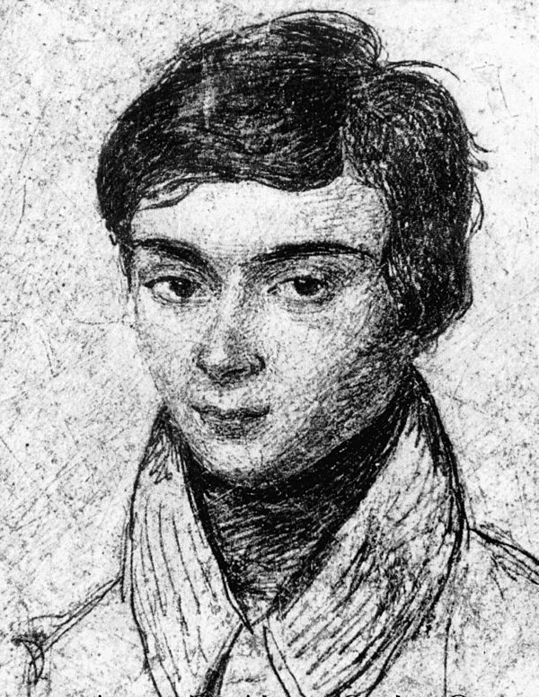
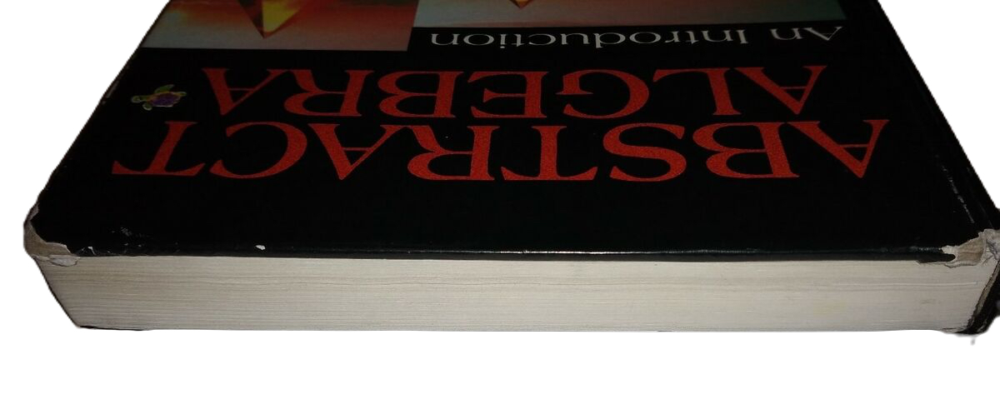
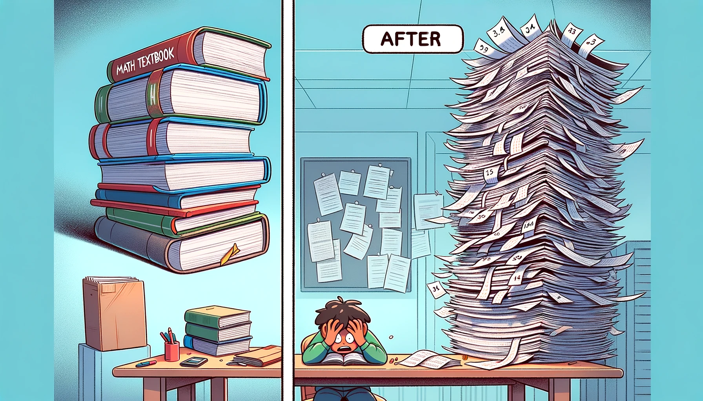

<!DOCTYPE html>
<html lang="en">
  <head>
    <meta charset="utf-8" />
    <meta name="viewport" content="width=device-width, initial-scale=1.0, maximum-scale=1.0, user-scalable=no" />

    <title></title>
    <link rel="stylesheet" href="dist/reveal.css" />
    <link rel="stylesheet" href="dist/theme/white.css" id="theme" />
    <link rel="stylesheet" href="plugin/highlight/zenburn.css" />
	<link rel="stylesheet" href="css/layout.css" />
	<link rel="stylesheet" href="plugin/customcontrols/style.css">


    <link rel="stylesheet" href="css/style.css" />

    <script defer src="dist/fontawesome/all.min.js"></script>

	<script type="text/javascript">
		var forgetPop = true;
		function onPopState(event) {
			if(forgetPop){
				forgetPop = false;
			} else {
				parent.postMessage(event.target.location.href, "app://obsidian.md");
			}
        }
		window.onpopstate = onPopState;
		window.onmessage = event => {
			if(event.data == "reload"){
				window.document.location.reload();
			}
			forgetPop = true;
		}

		function fitElements(){
			const itemsToFit = document.getElementsByClassName('fitText');
			for (const item in itemsToFit) {
				if (Object.hasOwnProperty.call(itemsToFit, item)) {
					var element = itemsToFit[item];
					fitElement(element,1, 1000);
					element.classList.remove('fitText');
				}
			}
		}

		function fitElement(element, start, end){

			let size = (end + start) / 2;
			element.style.fontSize = `${size}px`;

			if(Math.abs(start - end) < 1){
				while(element.scrollHeight > element.offsetHeight){
					size--;
					element.style.fontSize = `${size}px`;
				}
				return;
			}

			if(element.scrollHeight > element.offsetHeight){
				fitElement(element, start, size);
			} else {
				fitElement(element, size, end);
			}		
		}


		document.onreadystatechange = () => {
			fitElements();
			if (document.readyState === 'complete') {
				if (window.location.href.indexOf("?export") != -1){
					parent.postMessage(event.target.location.href, "app://obsidian.md");
				}
				if (window.location.href.indexOf("print-pdf") != -1){
					let stateCheck = setInterval(() => {
						clearInterval(stateCheck);
						window.print();
					}, 250);
				}
			}
	};


        </script>
  </head>
  <body>
    <div class="reveal">
      <div class="slides"><section  data-markdown><script type="text/template"><!-- .slide: class="drop" -->
<div class="" style="position: absolute; left: 0px; top: 0px; height: 700px; width: 1200px; min-height: 700px; display: flex; flex-direction: column; align-items: center; justify-content: center" absolute="true">

<div class="has-dark-background" style="background-color: #555555; position: absolute; left: 0%; top: 5%; height: 3%; width: 100%; display: flex; flex-direction: column; align-items: center; justify-content: center" >

기말과제<!-- .element: style="font-size: 13pt; color: white; margin-top: 30px; padding: 10px; box-sizing: border-box" -->
</div>

<div class="" style="position: absolute; left: 0%; top: 20%; height: 50%; width: 100%; display: flex; flex-direction: column; align-items: center; justify-content: center" >

## 인공지능으로<!-- .element: style="margin-left: 230px" -->
# 20세에 요절한 천재 수학자 구하기
</div>
<div class="" style="position: absolute; left: 0%; top: 70%; height: 5%; width: 100%; display: flex; flex-direction: column; align-items: center; justify-content: center" >

<center>컴퓨터교육과 정솔 <br>
2024.06.05(수)</center>
</div>
</div></script></section><section  data-markdown><script type="text/template"><!-- .slide: class="drop" -->
<div class="" style="position: absolute; left: 0px; top: 0px; height: 700px; width: 1200px; min-height: 700px; display: flex; flex-direction: column; align-items: center; justify-content: center" absolute="true">

<div class="" style="position: absolute; left: 0%; top: 5%; height: 20%; width: 100%; display: flex; flex-direction: column; align-items: center; justify-content: center" >

## 에바리스트 갈루아(1811 ~ 1832)
</div>

<div class="" style="position: absolute; left: 4%; top: 20%; height: undefined%; width: 46%; display: flex; flex-direction: column; align-items: center; justify-content: center" >



</div>

<div class="" style="position: absolute; left: 50%; top: 20%; height: undefined%; width: 46%; display: flex; flex-direction: column; align-items: center; justify-content: center" >

* 프랑스의 사회운동가이자 수학자
*  권총을 사용한 결투 끝에 사망
	* 사랑하는 연인 설
	* 정치적인 원인 설
	* "스물에 죽으려면 엄청난 용기가 필요하단다."
* 5차 방정식의 근의 공식이 존재하지 않음을 증명



</div>
</div></script></section><section  data-markdown><script type="text/template"><!-- .slide: class="drop" -->
<div class="" style="position: absolute; left: 0px; top: 0px; height: 700px; width: 1200px; min-height: 700px; display: flex; flex-direction: column; align-items: center; justify-content: center" absolute="true">

## 1단계 : 문제점 찾기


<!-- .element: style="margin-left: 350px" -->
### 일생

1. **초기 생애**:
    - 갈루아는 프랑스의 부유한 가정에서 태어났으며, 어린 시절부터 뛰어난 수학적 재능을 보였습니다.
    - 1823년에 파리의 리세 루이 르 그랑(Lycée Louis-le-Grand) 학교에 입학하여 공부를 시작했습니다.
2. **교육과 수학 연구**:
    - 학교에서 그는 특히 수학에 큰 관심을 보였으며, 독학으로 수학을 연구했습니다.
    - 17세 때, 갈루아는 프랑스 과학 아카데미에 **논문을 제출했으나 이해받지 못했습니다.**
</div></script></section><section  data-markdown><script type="text/template"><!-- .slide: class="drop" -->
<div class="" style="position: absolute; left: 0px; top: 0px; height: 700px; width: 1200px; min-height: 700px; display: flex; flex-direction: column; align-items: center; justify-content: center" absolute="true">

<div class="" style="position: absolute; left: 0%; top: 5%; height: 20%; width: 100%; display: flex; flex-direction: column; align-items: center; justify-content: center" >

## 
<!-- .element: style="margin-left: 250px" -->
</div>

<div class="" style="position: absolute; left: 4%; top: 30%; height: undefined%; width: 46%; display: flex; flex-direction: column; align-items: center; justify-content: center" >

1. **혁신적인 아이디어의 복잡성**
   <br><span class="src">갈루아의 이론은 그 당시의 수학적 이해를 크게 벗어나는 혁신적인 내용을 담고 있어 이를 이해하려면 기존의 수학적 사고를 크게 확장해야 했습니다.</span>
2. **논문의 서술 방식**<br><span class="src">갈루아의 논문은 서술이 명료하지 않고 구조가 잘 잡혀 있지 않았다는 평가를 받습니다. </src>
3. **통신의 한계**<br><span class="src"> 갈루아의 논문이 좀 더 넓은 학문적 커뮤니티의 검토를 받지 못한 것도 이해받지 못한 원인 중 하나일 수 있습니다.</src>
</div>

<div class="" style="position: absolute; left: 50%; top: undefined%; height: 100%; width: 46%; display: flex; flex-direction: column; align-items: center; justify-content: center" >


</div>
</div></script></section><section  data-markdown><script type="text/template"><!-- .slide: class="drop" -->
<div class="" style="position: absolute; left: 0px; top: 0px; height: 700px; width: 1200px; min-height: 700px; display: flex; flex-direction: column; align-items: center; justify-content: center" absolute="true">

## 2단계 : 문제 해결하기


<!-- .element: style="margin-left: 300px" -->

#### 1. 실시간 피드백 및 수정 제안과 시각화 도구

AI 기반의 피드백 시스템을 통해 수학적 오류를 지적하고, 더 나은 수학적 표현을 제안하며 복잡한 이론을 시각적으로 표현함으로써, 그의 이론을 더 쉽게 이해할 수 있도록 도왔을 것입니다.
#### 2. 논문의 명료화와 구조화

인공지능은 갈루아의 논문을 분석하여 더 명료하고 이해하기 쉬운 구조로 재편할 수 있었을 것입니다. AI가 논문의 전반적인 이해도를 향상시키는 데 기여할 수 있습니다.

#### 3. 폭넓은 학술 커뮤니티와의 연결

인공지능은 갈루아가 전 세계의 다른 수학자들과 소통하고 협력할 수 있도록 도왔을 것입니다. 이를 통해 그의 이론을 더 많은 전문가들에게 노출시키고, 다양한 피드백과 제안을 수집할 기회를 제공함으로써, 갈루아의 논문이 더 폭넓게 인정받는 계기를 마련할 수 있었을 것입니다.
</div></script></section><section  data-markdown><script type="text/template"><!-- .slide: class="drop" -->
<div class="" style="position: absolute; left: 0px; top: 0px; height: 700px; width: 1200px; min-height: 700px; display: flex; flex-direction: column; align-items: center; justify-content: center" absolute="true">

<split even gap=0.1>


</split>
</div></script></section><section  data-markdown><script type="text/template"><!-- .slide: class="drop" -->
<div class="" style="position: absolute; left: 0px; top: 0px; height: 700px; width: 1200px; min-height: 700px; display: flex; flex-direction: column; align-items: center; justify-content: center" absolute="true">

<div class="" style="position: absolute; left: 0%; top: 5%; height: 20%; width: 100%; display: flex; flex-direction: column; align-items: center; justify-content: center" >

## 3단계 : 문제 해결 후
</div>

<div class="" style="position: absolute; left: 4%; top: 20%; height: undefined%; width: 46%; display: flex; flex-direction: column; align-items: center; justify-content: center" >


</div>

<div class="" style="position: absolute; left: 50%; top: 20%; height: undefined%; width: 46%; display: flex; flex-direction: column; align-items: center; justify-content: center" >



</div>

* 갈루아가 그의 연구를 지속할 수 있었다면 천재적인 직관과 혁신적인 사고는 수많은 수학적 이론의 기초가 <br>되었을 것이며, 이는 현대 과학과 기술의 발전에도 큰 영향을 미쳤을 것입니다. <!-- .element: style="margin-top: 350px" -->
* 갈루아의 이론은 수학 교육 과정에 포함되어 한국의 고등학생들은 가우스와 함께 갈루아가 없었다면<br> 어땠을까를 매일 상상하며 더 많은 수학 학습을 감당하였을 것입니다.
</div></script></section><section  data-markdown><script type="text/template"><!-- .slide: class="drop" -->
<div class="" style="position: absolute; left: 0px; top: 0px; height: 700px; width: 1200px; min-height: 700px; display: flex; flex-direction: column; align-items: center; justify-content: center" absolute="true">

# 감사합니다.
</div></script></section></div>
    </div>

    <script src="dist/reveal.js"></script>

    <script src="plugin/markdown/markdown.js"></script>
    <script src="plugin/highlight/highlight.js"></script>
    <script src="plugin/zoom/zoom.js"></script>
    <script src="plugin/notes/notes.js"></script>
    <script src="plugin/math/math.js"></script>
	<script src="plugin/mermaid/mermaid.js"></script>
	<script src="plugin/chart/chart.min.js"></script>
	<script src="plugin/chart/plugin.js"></script>
	<script src="plugin/customcontrols/plugin.js"></script>

    <script>
      function extend() {
        var target = {};
        for (var i = 0; i < arguments.length; i++) {
          var source = arguments[i];
          for (var key in source) {
            if (source.hasOwnProperty(key)) {
              target[key] = source[key];
            }
          }
        }
        return target;
      }

	  function isLight(color) {
		let hex = color.replace('#', '');

		// convert #fff => #ffffff
		if(hex.length == 3){
			hex = `${hex[0]}${hex[0]}${hex[1]}${hex[1]}${hex[2]}${hex[2]}`;
		}

		const c_r = parseInt(hex.substr(0, 2), 16);
		const c_g = parseInt(hex.substr(2, 2), 16);
		const c_b = parseInt(hex.substr(4, 2), 16);
		const brightness = ((c_r * 299) + (c_g * 587) + (c_b * 114)) / 1000;
		return brightness > 155;
	}

	var bgColor = getComputedStyle(document.documentElement).getPropertyValue('--r-background-color').trim();
	var isLight = isLight(bgColor);

	if(isLight){
		document.body.classList.add('has-light-background');
	} else {
		document.body.classList.add('has-dark-background');
	}

      // default options to init reveal.js
      var defaultOptions = {
        controls: true,
        progress: true,
        history: true,
        center: true,
        transition: 'default', // none/fade/slide/convex/concave/zoom
        plugins: [
          RevealMarkdown,
          RevealHighlight,
          RevealZoom,
          RevealNotes,
          RevealMath.MathJax3,
		  RevealMermaid,
		  RevealChart,
		  RevealCustomControls,
        ],


    	allottedTime: 120 * 1000,

		mathjax3: {
			mathjax: 'plugin/math/mathjax/tex-mml-chtml.js',
		},
		markdown: {
		  gfm: true,
		  mangle: true,
		  pedantic: false,
		  smartLists: false,
		  smartypants: false,
		},

		mermaid: {
			theme: isLight ? 'default' : 'dark',
		},

		customcontrols: {
			controls: [
			]
		},
      };

      // options from URL query string
      var queryOptions = Reveal().getQueryHash() || {};

      var options = extend(defaultOptions, {"width":1200,"height":700,"margin":0.2,"controls":false,"progress":true,"slideNumber":true,"transition":"slide","transitionSpeed":"default"}, queryOptions);
    </script>

    <script>
      Reveal.initialize(options);
    </script>
  </body>

  <!-- created with Advanced Slides -->
</html>
